timaxmetovАнталья
1 / 3У меня был первый месяц в Анталье. Сажусь в такси. Таксист смотрит в зеркало.
Говорит, Rus musun? Говорю, değilim. Говорит, ne? Говорю, Kazağım.
Таксист замолчал. Секунд на десять.
В турецком нет «я есть». Есть хвостик, который клеится к слову. Разберём, как сказать я есть, я не, я ли, я был и я стану. И почему я однажды назвал себя свитером.
Начать разборговорить о себе & не быть свитером
Невероятная история
У меня был первый месяц в Анталье. Сажусь в такси. Таксист смотрит в зеркало.
Говорит, Rus musun? Говорю, değilim. Говорит, ne? Говорю, Kazağım.
Таксист замолчал. Секунд на десять.
Потом тянет себя за воротник. Говорит, bu kazak.
Kazak по-турецки свитер. Kazağım это «мой свитер». Или «я казах». Как повезёт.
Получается, я сказал таксисту: я свитер.
Таксист смеялся до самого дома. Денег взял как обычно.
С тех пор говорю Kazakistanlıyım. Длинно. Зато без свитера.
А главное я понял в той машине. В турецком нет «я есть». Есть хвост -ım. И он клеится к чему угодно. Даже к свитеру.
В русском мы выкинули «есть». Говорим: я студент. Турки пошли дальше. «Я» тоже можно выкинуть. Хвост всё скажет сам.
Учить тут нечего. Четыре пары. Нажми на карточку, услышишь.
У третьего лица хвоста нет. O öğrenci. Он студент. Всё. Самая ленивая форма в языке.
Выбери слово, человека и время. Конструктор приклеит хвост и покажет, почему именно такой.
Нажми на плюс. Внутри пример и как не попасться.
Сам хвост не меняется. Он просто прыгает на соседнее слово. Нажми и посмотри.
mi тоже хамелеон: hasta mısın? doktor musun? Türk müsün? А değil никогда не меняется. Упрямый.
У меня была стажировка в консульстве. Звонит телефон. Беру.
Мужчина говорит, Konsolos Bey siz misiniz? Вы консул?
Говорю, hayır, konsolos değilim. Stajyerim. Нет, я не консул. Я стажёр.
Говорит, tamam, sabırlıyım. Ладно, я терпеливый. Перезвонил через десять минут. Потом ещё через десять.
Терпеливым он не был. Sabırlı değildi.
Консулом я тоже не был. Зато değil с тех пор у меня на автомате.
Между словом и лицом встаёт -dı (-di, -du, -dü). После глухих -tı. После гласной -ydı. А лицо худеет: -m, -n, -k.
У меня был заплыв. Татарский. Второй ежегодный. Я приплыл пятым.
Друг спрашивает, nasıldı? Как было?
Говорю, yorgundum ama mutluydum. Устал, но был счастлив.
Говорит, beşinci miydin? Пятым был?
Говорю, beşinciydim. Был.
Медали дают первым трём. Пятым дают чай. Чай был хороший. Çay güzeldi.
Будущее, «стать», «хочу быть», приказ. Тут хвост не справляется. Зовёт старшего брата.
Пять фраз. Четыре хвоста. Один olmak невидимый. Нажми «Слушать всё».
Теперь ты. Benim adım … · … yaşındayım · …lıyım. Скажи вслух. Таксисту можно не говорить.
| Есть | Не | Вопрос | Был | Буду | |
|---|---|---|---|---|---|
| Ben | öğrenciyim | değilim | miyim? | öğrenciydim | olacağım |
| Sen | öğrencisin | değilsin | misin? | öğrenciydin | olacaksın |
| O | öğrenci | değil | mi? | öğrenciydi | olacak |
| Biz | öğrenciyiz | değiliz | miyiz? | öğrenciydik | olacağız |
| Siz | öğrencisiniz | değilsiniz | misiniz? | öğrenciydiniz | olacaksınız |
| Onlar | öğrenciler | değiller | öğrenciler mi? | öğrenciydiler | olacaklar |
Ответь на этот и ещё 7 вопросов. Пояснение после каждого.
а теперь вопрос
Ты только что выучил olmak. Это значит «кем ты хочешь стать?». Ответь на три вопроса. Покажу, что тебе даст платформа.
Кем ты хочешь стать в Турции?
Где ты сейчас?
Сколько минут в день реально есть?
ещё одна история
Мне пишет Элина. Говорит, турецкий у меня на слух. Понимать понимаю. Говорить не говорю.
Говорит, ответ в голове знаю. А вслух стесняюсь.
Я кидаю ей платформу. Говорит, хорошо, позже дам обратную связь.
Позже наступило 30 сентября. В 01:56.
Пишет: разбираю грамматику, уже понимаю, почему отвечаю именно так. Сразу появилась уверенность. Сразу барьер прошёл.
Отвечаю: рахмет большой. В 11:22. В 01:56 я сплю.
Понимать понимала, но говорить не говорилаЭлина, Telegram
Занимаюсь с репетитором, но получается раз в неделюДарья, Telegram
Несколько раз начинала и каждый раз говорила себе: зачем мне это?Алиса, Telegram
Тема «Глагол-связка olmak» уже лежит в платформе. Рядом ещё 127. Плюс всё, что нужно между ними.
Это реальные скрины с телефона. Каждый раздел отдельный мир, а вместе они работают как один курс.
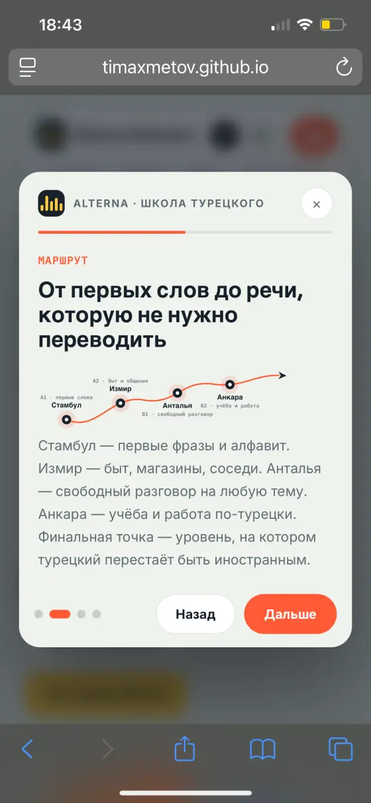
+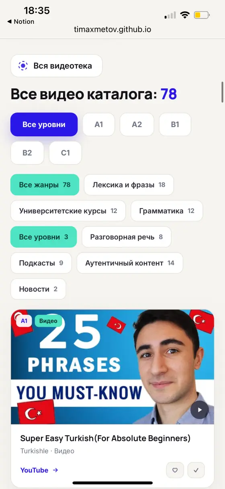
+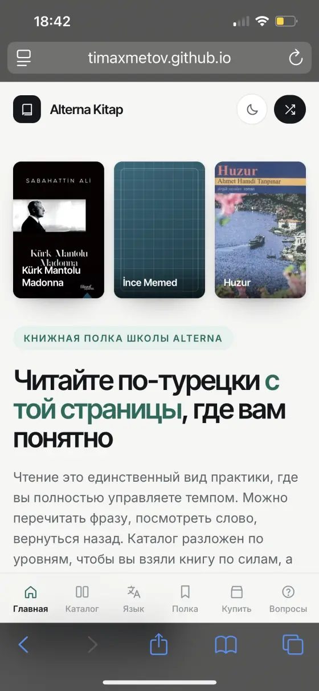
+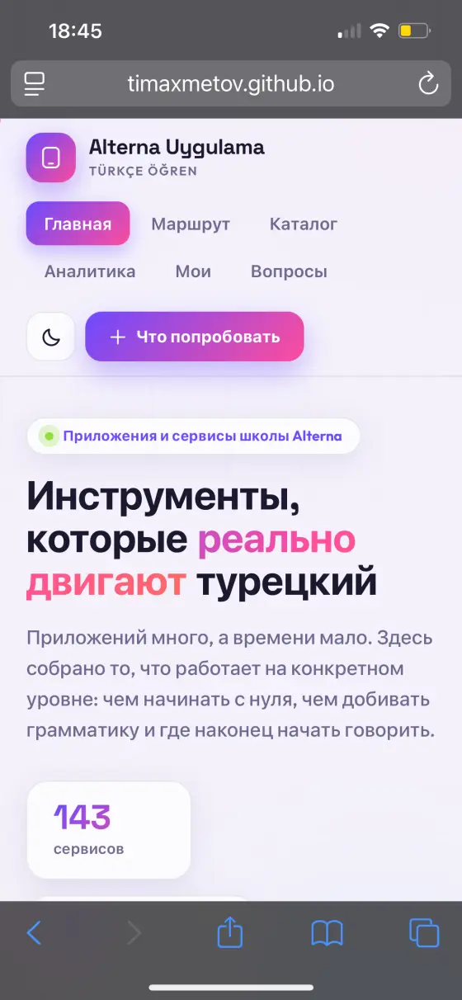
+Записи экрана. Без монтажа. Листай вбок, нажми на видео, чтобы открыть на весь экран.
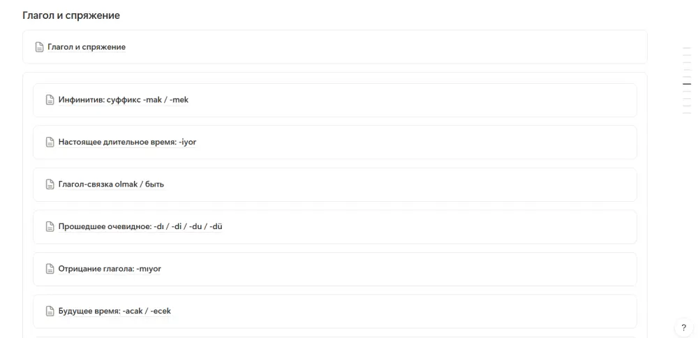
Глагол-связка olmak уже внутриРаздел «Глагол и спряжение»
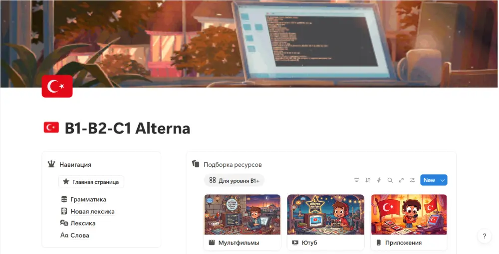
Два уровня: A0–A2 и B1–C1Навигация, грамматика, лексика, слова
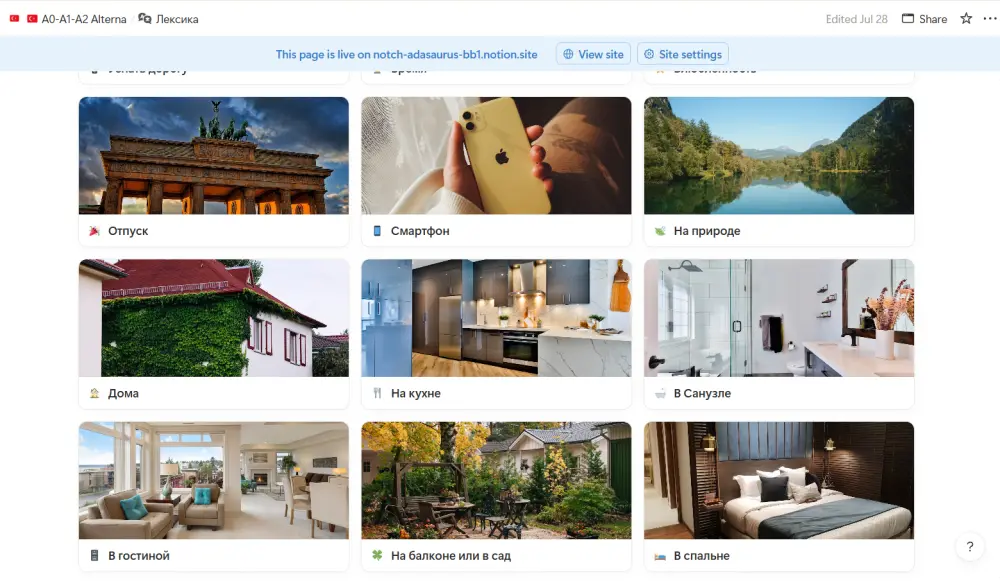
Лексика по темам с фотоДом, отпуск, смартфон, природа
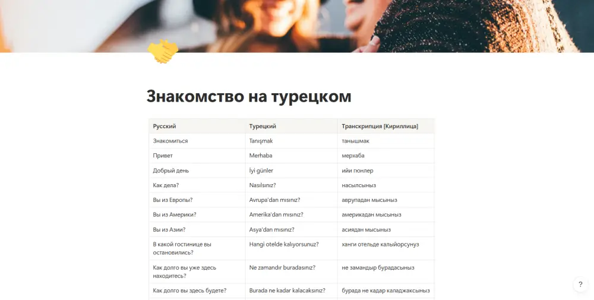
Фразы с транскрипциейЗнакомство на турецком: таблица русский · турецкий · кириллица

Трекер прогресса по темамВидно, что пройдено и что дальше
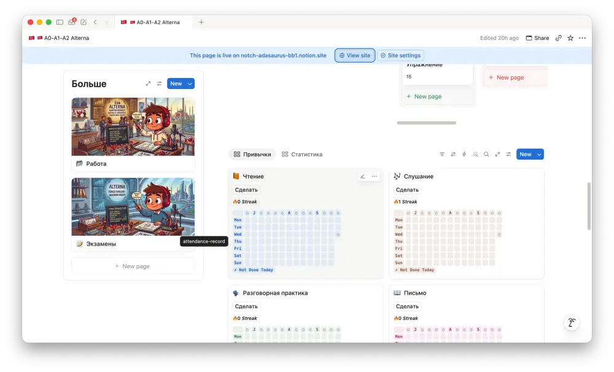
Трекер привычекЧтение, слушание, разговор, письмо
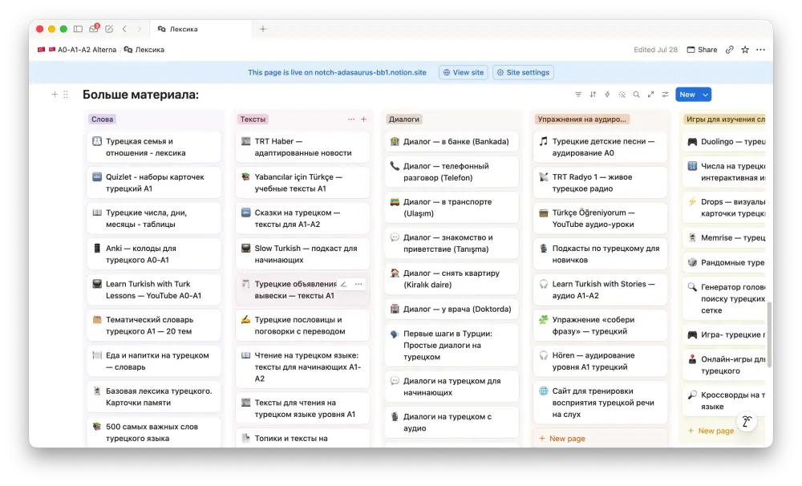
Слова, тексты, диалоги, игрыВсё на одной доске
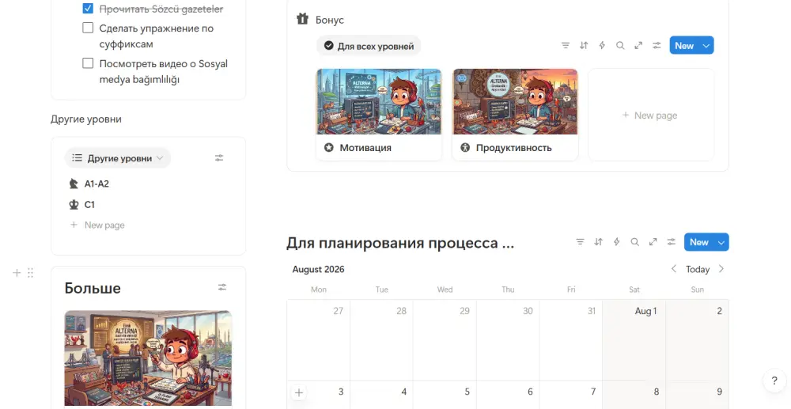
Планер и бонусыМотивация, продуктивность, календарь
Платишь один раз. Ни подписки, ни «продлите доступ».
Оплата через lava.top
Из Telegram. Только имена, без фамилий.
«Несколько раз начинала учить турецкий и каждый раз говорила себе, зачем мне это нужно? Но благодаря вам я каждый день изучаю что-то новое, хотя бы просто читаю.»
«Сейчас разбираю грамматику и уже понимаю, почему я отвечаю именно так. Сразу появилась уверенность и вести диалоги стало легче. Сразу барьер прошёл.»
«Очень нравится подача через личные истории, это смешно и помогает легче запомнить информацию.»
«Создать площадку с уровня A0 до уровня C1 с такой огромнейшей базой для облегчения процесса изучения турецкого языка — это что-то!!!»
С нуля. Есть отдельная часть A0–A2 и отдельная B1–C1. Открываешь свой уровень и берёшь.
Нет. $30 один раз, доступ навсегда.
Основа в Notion: работает в браузере и в приложении на телефоне и ноутбуке. Каталоги мультиков, книг, подкастов и приложений открываются как сайты.
В основу легли учебники TÖMER, по которым я сам учился год перед университетом. Плюс живой язык: мультики, подкасты, книги, видео.
Чтобы между уроками не было тишины. Дарья так и делает: занимается с репетитором раз в неделю, а материалы использует как дополнение.
Kim olmak istiyorsun?
Один раз. Доступ навсегда.